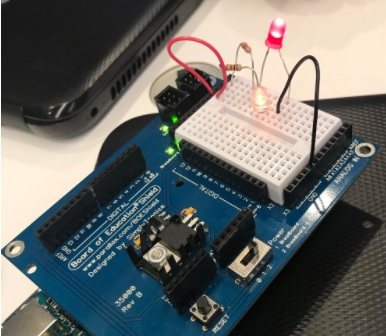

Today, I learned how to make shapes on Python. We learned about Python and the similiarties and differences between Python and Scratch. Scratch is made to be easy for beginners as it gives you sprites and all of the commands are in blocks, instead of making the user type everything out. Scratch was definately very helpful to start out with because I got to build off of what I learned and apply it to Python. In Python,the user does have to type out the commands and I found this a little bit more difficult to get things in order by indentation. I am still trying to figure out in my code on how to make something occur after every time in the "while true" aka "forever loop. However, they do have similar functions and it made my experience with Python very helpful. I am still trying to debug my code so that the shape making continues forever in different locations.
Lists work similary to strings and use [] to store the data with the first element starting at 0 then goes up. There are different python functions that go with lists. For example, there are append put bracket and adds to the list as one new variable. There is extend and you put it in brackets and the variables go into the list. Tuples are like a list but you can't change it so you can't append or extend. Searching lists/ list.index('blah')tell you where something is in the list. To find where something is in a list, use print(five_syllable.index('There was a kitty')) --> it'll print the number.
Today we learned about robots and what defines a robot. We decided that a robot would:
After a long weekend, we started making a circuit using Arduino. We lit up a LED using resistors, a breadboard, a Shield, jumper cables, and LEDs. We also lit it up through series and parallel circuit and using a button to stop or start the flow of currents. We also used a piezo which would vibrate and create a buzzing noise. Here's an example of the parallel which used two resistors and two LEDs. My group worked very well together and we were worked very efficently.
Today, we learned how to code a blinking LED light by using the breadboard on the Shield. We connected it to the computer in order to power the Arduino. Afterwards, we programmed five different LEDs to make a little lightshow. Since we were finished with the project, we decided to assemble part of the kit. After looking up a servos code, we programmed the servos so the wheels would "pulse" little by little. We also learned about Ayanna Howard, who is a a roboticist who worked at the Jet Proplsion Laboratory (JPL). Manuela Veluso is another woman eingineer who works at he Herbert A. Simon University as a professor. She was the president of AAAI until 2014 and the co-founder of RoboCup Federation. Both women made a huge influence on robotics and continues till today.
Today in class, we programmed a robot to dance with Arduino. Using a servo, we picked a song (Wannabe by the Spice Girls) and made the robot "dance." It was difficult because we could not figure out how to make the servo what we want. For example, one wheel would go forward while the other would go backwards. I worked with Ashley and Chloe to solve the problem and since we were ahead, we also programmed three LED lights. My favorite part of the robot's dance was when it would move side to side because it was the first dance move that we programmed. We had trouble, but we eventually figured it out. Manuela Veloso and Ayanna Howard would need digital and analog outputs depending on what they need it for.
Today, we created an "Escape Bot" which would use sensors to escape a box. We used an
online code which we uploaded to our robot. The infrered LED would send out a frequency
and if the frequency was detected by the infrered sensor, then the robot would know something
is in it's direction. We had two sensors: one on the left and the other on the right. We had
another code which also detects if there is something in it's direction; however, it also
printed out 0 or 1. 0 would mean that the computer does sense something while 1 means that
it does not sense anything. Since it successfully printed 0 or 1, we used the main code which
helped the bot escape. I was with Sanchita, Phoebe, Itohan, and Natalie. We worked really well
together as we are all very friendly!
Today, we learned about the Django framework. First, we were also given a sample website and had to figure out which parts of the website used Javascript. Nisha and I looked at the Washington Post. We found that Javascript was used with the pop up bars or ads, main bar that follows user, icons, videos, and as the user hovers over an article, the font turns blue from black. We also read different articles about the MVC. MVC is a software program for users on computers and MVC stands for:
I think that the MVC is a difficult concept to grasp, but hopefully with more experience, I get a better understanding of it. I would love to learn how to use Javascript or any other program to do all of the designs that there were on the Washington Post. I would like to figure out how to make a bar, icons, and more.
I would like to add different designs, such as a drop down function or a bar that follows the user as she scrolls down. I could create a social media platform with the Django site that I used in my portfolio page.
Through our search through the internet, I was surprised that only 8 people in my zipcode are born in 2001. A programmer can protect the privacy of their users from identity theft or by using cyber security. Or else, the program is vulnearble to attacks. We also learned about Latanya Sweeney who is a professor of Government and Technology in Residence at Harvard University. Her mission is to create and use technology to assess and solve societal, political and governance problems. Shafi Goldwasser, another woman in tech, is an American-Israeli computer scientist. She is an RSA Professor of Electrical Engineering and Computer Science in MIT and a co leader of the cryptography and information security group.
We found out that computers are good with data because it has the ability to process information and apply it to other things without human error.
Today, we learned about algorithms and how they apply to the real world. We learned about Alicia Abella, who is an Assistant Vice President, Cloud Technologies and Services Research Organization, with 20 years of experience. She researched cloud computing, distributed storage, and mobile services. She is also a strong advocate for the development of minorities and women in science and engineering at the AT&T. She is part of the AT&T Women of Technology and Network. Computer algorithms are basic techniques used to get a computer program to work.
Today, we got in our final group project and talked about the details for the final project. I am with Becca, Melinda, and Clara and we are creating an app that will help millenials understand politics better. Our generation and the younger generation does not want to read dense material; therefore, we would like to create an app to fix this problem. I would like to become more honest in order to become a more effective leader. I am working torwards that goal by speaking up when I do or do not agree about a topic. My team divided the work fairly. We are spending the rest of today and tomorrow learning about our program, Arduino Studio. Then, I am working with Becca in creating a profile page for our user and for the politicans while Melinda and Clara are working on the hierarchy page. We chose to split it up this way because the profile page and hierarchy page seem like equal work. After we finish the profile page for the user, we can use the same code for the politicans. I am going to ensure that we completing this task by making sure we are on time with our timeline.